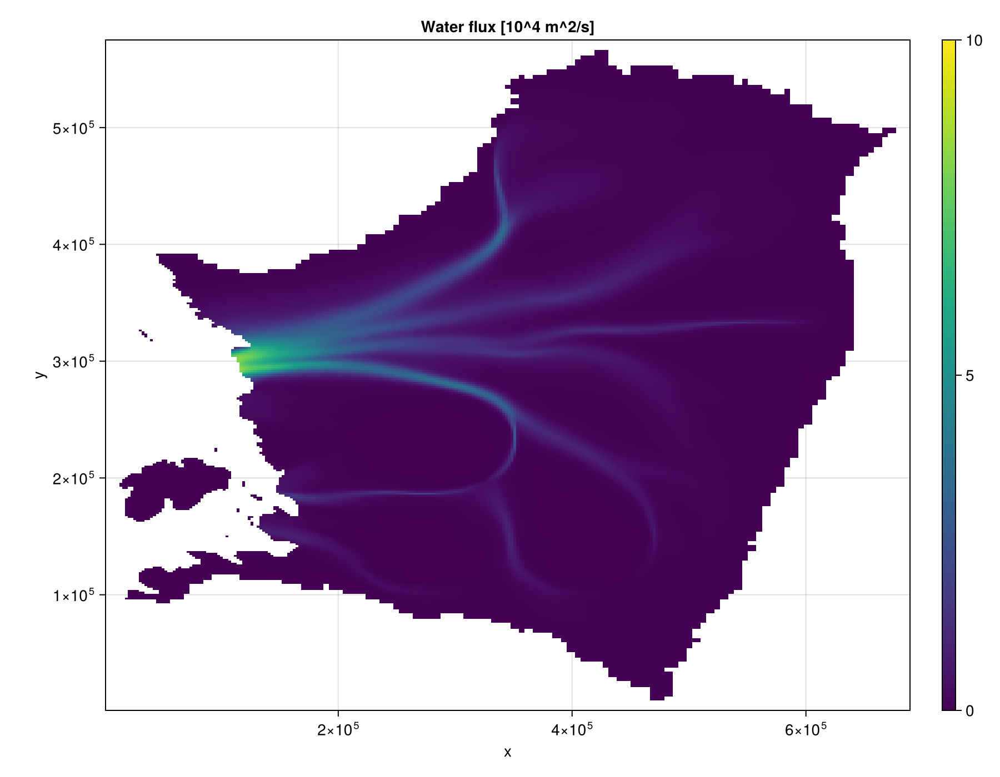
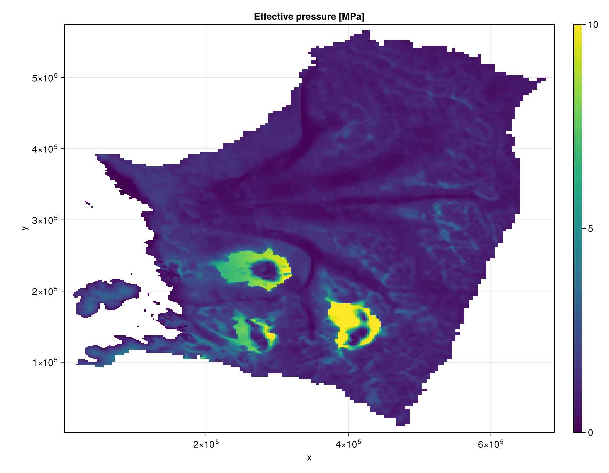

Tutorial
One runnable script, every decision from input data to output. Each step lists the options as Option(...) what it does, the live line below the list is the default or a typical pick. Change it to switch.
Steps: 1 data, 2 grid, 3 state, 4 model, 5 simulation, 6 run, 7 diagnostics, 8 save, 9 plot.
This page is not run when the docs are built, the input file is too big to ship. The figures at the end are from running it as is.
using FastHydrology
import CairoMakie # `import`: only activates the plotting extension
using Statistics: median
path = "THWAITES2km_m3_HAB_toto.mat"
OUT = mkpath("output")1. Data
Grid and inputs come together, the loaders return both.
Loader:
load_Kazmierczak(path; bed_rheology, k_ice = 2.1)KORI-ULB .mat output (Thwaites)load_yelmox(path; bed_rheology)Yelmo(x) restart .nc- your own arrays any
Nx x Nymatrices in SI units (see below)
bed_rheology (how kappa, the bed hardness 0 = hard .. 1 = soft, is derived from the bed elevation b):
:hardkappa = 0everywhere:softkappa = 1everywhere:mixedsoft whereb < -1000m:mixed_smoothlinear ramp from hard (b > -500m) to soft (b < -1500m)
Returned, all SI: mask (1 = grounded), h [m], b [m], abs_v_b [m/s], A_visc [Pa^-3 s^-1], G [W/m2] geothermal flux, q_T [W/m2] conductive flux into the ice, tau_b [Pa], kappa. Unit helpers for your own data: perYear2perSecond, perSecond2perYear, Km2m.
Nx, Ny, xlims, ylims, mask, h, b, abs_v_b, A_visc, G, q_T, tau_b, kappa = load_Kazmierczak(path; bed_rheology = :mixed_smooth)2. Grid
Grid type:
ArrayHydroGrid(Nx, Ny, xlims, ylims; T)plain Arrays (dx != dyis fine)- your own
AbstractHydroGridsubtype implement the grid interface (e.g. a GPU backend)
T (float type of every field of the grid, state and model):
Float64(default)Float32(stays Float32 throughout, looser default tolerances)
grid = ArrayHydroGrid(Nx, Ny, xlims, ylims; T = Float64)3. State
Inputs mask/h/b, outputs N and W start at zero.
mask: 1 = grounded ice, anything else is not solved (N = 0 there). Update state.h / state.b / state.mask in place between runs for a coupled ice model.
state = HydroState(grid, mask, h, b)4. Model
Model:
KazmierczakHydroModel(grid, kappa, abs_v_b, A_visc, G, q_T; ...)routed water flux ->N,W(below)HABHydroModel(grid)height above buoyancy,Nfrom geometry only, no optionsShaktiHydroModel(Shakti.Simulation)time-dependent, needsimport Shakti, useTimeSimulation(step 5)
Kazmierczak et al. 2024: every keyword
Defaults shown, all are set in the call below.
Water source (Eq. 3: mdot = (G - q_T)/L_w + (Q_b + Q_diss + Q_sens)/L_w + i_eb)
i_eb = nothingwater reaching the bed from above [kg/m2/s] (field ornothing= 0)dissipation_melt = trueinclude|q grad(phi0)|/L_w(Picard loop), orfalsesensible_heat = falseinclude the sensible heatQ_sens = ct cw rho_w q grad(p_w),p_w = Po - N(not in K24; solved in the (q, N) loop)ct = 7.5e-8[K/Pa],cw = 4220[J/kg/K]
dissipation_discretization = nothing:CellCentredDissipation(),FaceDissipation(),nothing= Face for Warner, else CellCentred (also used for the sensible heat)sliding_law = NoFrictionSlidingLaw()frictional heatQ_b = tau_b * |u_b|:NoFrictionSlidingLaw()Q_b = 0PrescribedFieldSlidingLaw(grid, tau_b)fixedtau_bfield (e.g. from the ice model)WeertmanSlidingLaw(C = , q = 1/3)tau_b = C |u_b|^qPowerPlasticSlidingLaw(c_till = , q = 1, u0 = 100 m/yr)N-dependentRegularizedCoulombSlidingLaw(c_till = , q = 1/3, u0 = 100 m/yr)N-dependentRegularizedCoulombFieldSlidingLaw(grid, c_till_field; q, u0)N-dependent,c_tillvaries in spaceShaktiRegularizedCoulombSlidingLaw(grid, A_visc, C; n, lambda_coeff)N-dependent, matches Shakti
friction_discretization = CellCentredFriction():CellCentredFriction()tau_b * |u_b|at cell centresStaggeredFriction(ux, uy; quadrature = false, u_floor)C-grid velocities (Yelmo-style)
max_qN_iters = 20,qN_rtol = nothing,qN_verbose = true(q, N) loop, only for N-dependent laws orsensible_heat = truemax_dissipation_iters = 20,dissipation_rtol = nothing,dissipation_verbose = true
Routing of the water (potential -> flow directions -> flux q)
routing_scheme = Warner():Warner()4 neighbours, face potential drop (default)GDSWarner()original K24/KORIQuinn(original = false),Tarboton(),ModifiedTarboton(),GDSTarboton()8 neighbours
fill_algorithm = nothingremoves pits in the potential (nothing= Priority-flood,JacobiFillfor GDS):PriorityFloodFill(epsilon = 1.0),LowestNeighbourFill(),JacobiFill()fill_iters = 10passes (Jacobi / LowestNeighbour fill only)gradient_discretization = nothing:CentredGradient(),FaceGradient(),nothing= Face for Warner, else Centredq_conversion = nothing:QFromOutflow(),QFromFaceAverage(),nothing= FaceAverage for Warner, else Outflowpsi_out_algorithm = TapedPsiOut()how the routed flux is accumulated (non-GDSWarner needs Taped):TapedPsiOut()fastestRecursivePsiOut(),IterativePsiOut()TopologicalPsiOut(allow_cycles = false)exact only on cycle-free routing
max_psi_out_calls = 100_000safety cap on the recursive/iterative sweepcoupling_length_kamb86 = nothingstress-coupling smoothing length in ice thicknesses,>= 0:0.0off (right when the length is below one grid cell)4-10ice sheet,1-3valley glacier,~12surging glaciernothing= 10.0 and a warning
Conduit and effective-pressure physics
drainage_mode = BothDrainage():BothDrainage(),EfficientOnly(),InefficientOnly()glen_n = 3.0Glen's exponentbed_bump_height = 0.1h_b[m]flux_W_exponent = 5/4alpha,flux_grad_exponent = 3/2betaf = 0.1Darcy-Weisbach friction factorF_till = 1.1soft-bed till factorQ_c = 1.0laminar-turbulent discharge threshold [m3/s]H0_efficient = 0.1canal thickness over soft bed [m]conduit_spacing = 10_000.0l_c[m]water_viscosity = perYear2perSecond(1.8e-3)eta_w(KORI-ULB's value)rho_w = 1000,rho_i = 917,g = 9.81,L_w = 3.34e5rho_sw = 1028sea water density in the erf term, soN = 0at flotation (setrho_sw = rho_wfor K24 Eq. 7 as written)
Limiters (all off by default, KORI-ULB's values in brackets)
q_min = 0.0,q_max = Inf[perYear2perSecond(1e5)],N_min = 0.0,W_min = 0.0[1e-8],W_max = Inf[0.015]
Water thickness W (diagnostic, feeds back into nothing)
water_thickness_algorithm = DarcyWeisbachThickness():DarcyWeisbachThickness(gradient_convention = MeanGradient())ArealConduitThickness()LaminarThickness(gradient_convention = MeanGradient())gradient_convention:MeanGradient()domain mean,LocalGradient()per cell
Every keyword is set below, most at their defaults (the ones marked "not default" are picks for this data). nothing defaults are written out as what they resolve to for Warner routing.
model = KazmierczakHydroModel(grid, kappa, abs_v_b, A_visc, G, q_T;
# water source
i_eb = nothing,
dissipation_melt = true,
sensible_heat = false, ct = 7.5e-8, cw = 4.22e3,
dissipation_discretization = FaceDissipation(),
sliding_law = PrescribedFieldSlidingLaw(grid, tau_b), # not default (default NoFrictionSlidingLaw())
friction_discretization = CellCentredFriction(),
max_qN_iters = 20, qN_rtol = nothing, qN_verbose = true, # nothing = max(1e-8, 100 eps(T))
max_dissipation_iters = 20, dissipation_rtol = nothing, # nothing = max(1e-12, 100 eps(T))
dissipation_verbose = false, # not default (true)
# routing
routing_scheme = Warner(),
fill_algorithm = PriorityFloodFill(),
fill_iters = 10, # ignored by PriorityFloodFill
gradient_discretization = FaceGradient(),
q_conversion = QFromFaceAverage(),
psi_out_algorithm = TapedPsiOut(),
max_psi_out_calls = 100_000,
coupling_length_kamb86 = 10.0, # not default (nothing -> 10.0 with a warning)
# conduit and effective-pressure physics
drainage_mode = BothDrainage(),
glen_n = 3.0,
bed_bump_height = 0.1,
flux_W_exponent = 5/4,
flux_grad_exponent = 3/2,
f = 0.1,
F_till = 1.1,
Q_c = 1.0,
H0_efficient = 0.1,
conduit_spacing = 10_000.0,
water_viscosity = perYear2perSecond(1.8e-3),
rho_w = 1000.0, rho_sw = 1028.0, rho_i = 917.0, g = 9.81, L_w = 3.34e5,
# limiters (all off)
q_min = 0.0, q_max = Inf, N_min = 0.0, W_min = 0.0, W_max = Inf,
# water thickness
water_thickness_algorithm = DarcyWeisbachThickness(gradient_convention = MeanGradient()),
)After construction the source terms can be changed without rebuilding: set_basal_terms!(model; G = newG, q_T = newq_T, i_eb = new_i_eb)
5. Simulation
SteadyStateSimulation(model, grid, state)K24 and HAB, solve from the current geometryTimeSimulation(model)ShaktiHydroModelonly (owns its grid and state)
sim = SteadyStateSimulation(model, grid, state)6. Run
run!(sim)solve everything:q, thenN, thenWupdate_steady_state!(model, grid, state)the same without the simulation wrapperstep!(sim)one Shakti step (TimeSimulation, for coupled drivers)run!(sim; checkpoint_every, checkpoint_path, restart_path, extend_path)Shakti only
Partial updates (K24): update_q! -> update_N! -> update_W! (in that order).
N from a new sliding speed without re-routing: N_from_ub!(model, grid, state, new_abs_v_b) (use when the host velocity solve depends on N, check N_responds_to_ub(model)).
run!(sim)7. Results and diagnostics
state.N [Pa] effective pressure, state.W [m] water thickness. K24 also keeps, on the model:
model.q[m2/s] water fluxmodel.psi_out[m3/s] integrated fluxmodel.Po[Pa] overburdenmodel.mdot_total[kg/m2/s] routed sourcemodel.Q_b,model.Q_diss,model.Q_sens[W/m2]model.phi0[Pa]freeze_on_capacity!(C, model, grid, state)fillsCwith the freeze-on capacity [m/s ice]
grounded = mask .== 1
thick = grounded .& (model.Po .> 0) # grounded cells with h = 0 have Po = 0 and N = 0
println("grounded cells: ", count(grounded))
println("median N/Po: ", round(median(state.N[thick] ./ model.Po[thick]); digits = 3))
println("median q: ", round(perSecond2perYear(median(model.q[grounded])); sigdigits = 3), " m2/yr")
println("median W: ", round(1e3 * median(state.W[grounded]); sigdigits = 3), " mm")8. Save
Output writer (one slice per call, flushed to disk, so a killed run keeps what it wrote):
NetCDFOutputWriter(path, grid, [:N, :W, ...]; resume_step = nothing, overwrite = true)(resume_step = nreopens an existing file and drops slices after stepn)write_output!(writer, step, time, (N = state.N, W = state.W))one slice, the NamedTuple must hold every nameclose_output!(writer)
writer = NetCDFOutputWriter(joinpath(OUT, "example_simulation.nc"), grid, [:N, :W])
write_output!(writer, 1, 0.0, (N = state.N, W = state.W))
close_output!(writer)Checkpoint (all state fields plus step/time, atomic write): save_checkpoint(path, state, step, time) and load_checkpoint!(state, path) -> (step, time)
save_checkpoint(joinpath(OUT, "example_simulation_ckpt.nc"), state, 1, 0.0)9. Plot
Needs CairoMakie or another Makie backend.
visualize_grid(grid)cell layoutvisualize_field(grid, field; plot_title, transpose_data = false, colorrange = nothing, display_flag = true, colormap = Reverse(:RdBu), colorscale = identity, savefig_path = nothing)visualize_field(x, y, data; ...)same, on explicit coordinatesmask_field(field, mask, value)set non-grounded cells tovalue(e.g.NaN) before plotting
visualize_field(grid, mask_field(perSecond2perYear.(model.q) ./ 10^4, mask, NaN)';
plot_title = "Water flux [10^4 m^2/a]", colormap = :viridis, display_flag = false, colorrange = (0, 10),
savefig_path = joinpath(OUT, "example_simulation_q.png"))
visualize_field(grid, mask_field(state.N ./ 10^6, mask, NaN)';
plot_title = "Effective pressure [MPa]", colormap = :viridis, display_flag = false, colorrange = (0, 10),
savefig_path = joinpath(OUT, "example_simulation_N.png"))Result

